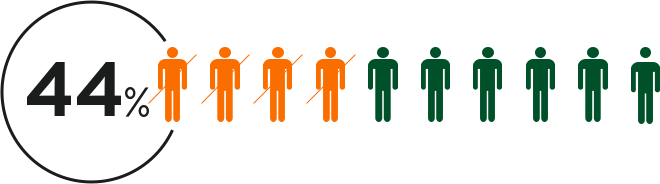

Sexually transmitted diseases are infections that are typically, but not exclusively, passed from person to person through sexual contact. People all over are not getting the correct education they need due to some states being abstinence educated states. We aim to inform and change the amount of people who are uneducated. These facts will shine light on the need for this type of sexual education.
States that require sex education Include abstinence or abstinence include Alabama, Alaska, Arizona, Arkansas, Colorado, Delaware, Florida, Georgia, Illinois, Indiana, Louisiana, Maine, Michigan, Mississippi, Missouri, New Jersey, New York, North Carolina, Ohio, Oklahoma, Oregon, Rhode Island, South Carolina, Tennessee, Texas, Utah, Washington, Wisconsin. That is more than 50% of the United States.
Due to the failure to educate teens on STD prevention, these states are the top 15 states with high STD rates with Alaska being #1 and Texas #15.
35% of Americans who have herpes don't know it.
468,578 people are living with HIV/AIDS, and 44% of those people are African-American.

1 in 5 people living with HIV has not been diagnosed.
Eighty-five percent of Americans with herpes (42 million people) don't know it.
Reported cases of primary and secondary syphilis rose by 19%, gonorrhea cases rose by 12.8%, and chlamydia cases rose by 5.9%, from 2014.
With all these facts in mind, we want to educate and protect the future generations in hopes that they will not make the same mistake past generations have made.